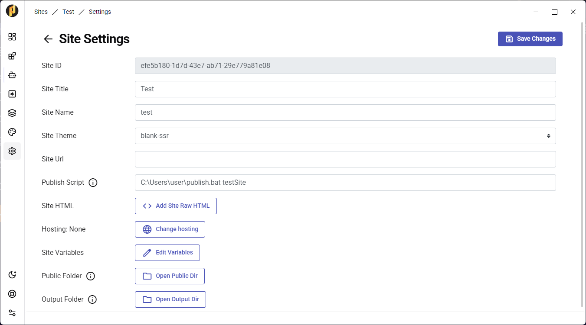

Unlike other platforms, PRSS allows you to manage your blog without any need for registration.
To publish your site without setting up hosting on PRSS, you can specify a Publish Script in your Site Settings.
That's all! Next time you publish a post, your script will run.
- You can create a script to move the Output Folder files to your desired destination. For example, a Git repository.
- The script is run after your site is built. The working directory for the script will be the the Output Folder directory.
- If you've set up your site's hosting with PRSS, your script will be run after the Publish to GitHub is complete.